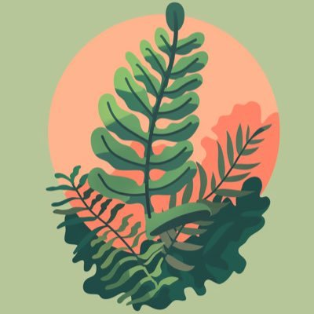
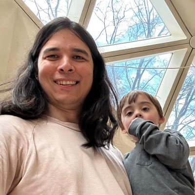
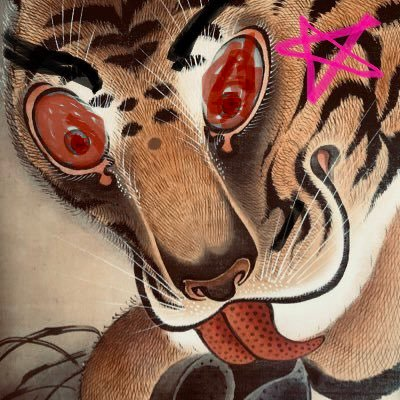
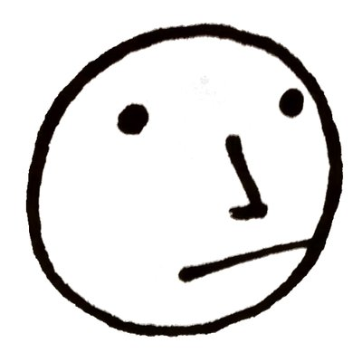
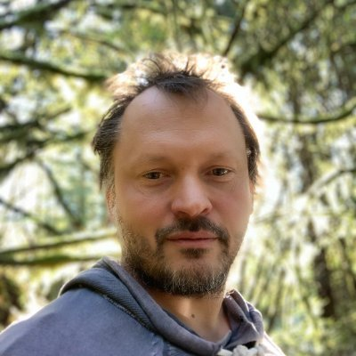
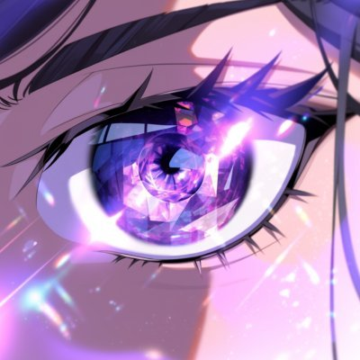
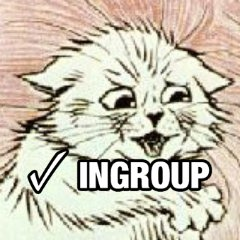
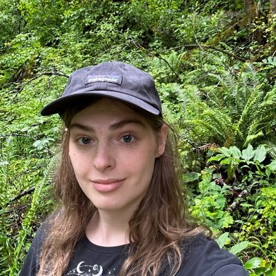
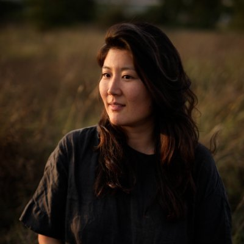
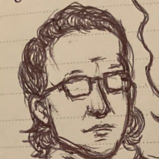

Southwest Washington · August 7-10
Cascade Camp
A small participant-made gathering for belonging, collaboration, and offline aliveness.
What it is
A light container.
Not a polished conference. Not a passive retreat. Cascade Camp is a place for people to bring the sessions, projects, meals, walks, questions, rituals, and experiments they want to find in the world.
How it works
The pot is here.
Cascade Camp grew out of tpot123 and adjacent Twitter networks: people finding each other through jokes, projects, writing, mutual aid, weird questions, and a shared appetite for making things real.
That network seeds the camp, but it is not the boundary of it. Friends, partners, families, neighbors, lurkers, and people from a day or two drive away are part of the shape too.
We aim to keep it affordable and reachable. If Southwest Washington is within range, this should be something you can make, participate in, and use to meet people you might otherwise only know online.
Tickets
What's included.
Meals included. BYO tent.
August 7-10, 2026.
Early bird tickets are $222 while they last. General tickets are $256. Significant-other and child tickets are available, with free tickets for children 3 and under.
Meals are included: Friday dinner, three meals on Saturday and Sunday, and Monday breakfast. The exact address is shared after registration. Elkenmist rooms are sold out for this year. Tickets are fully refundable on request until August 1; after that, a portion is held back for the catering deposit.
For latest details, discussion, and questions, join the Cascade Camp Discord.
Get ticketsThe place
Elkenmist.
A rustic Southern Washington farm, campground, and retreat place shaped by land, food, fire, and hands-on work.
Visit ElkenmistPlan to camp in tents, gather for shared meals around an outdoor kitchen, and find enough quiet around the edges for walks, talks, and small experiments to find their own pace.
Attendees
Nearby orbits.

Rhizomia @rhizomia_ Organizer/project account for Cascade Camp and its regional hosting orbit.A rotating handful of the people orbiting this year's camp:

Steven Fan @_stevenfan Year 3 Holding the pot, wrangling logistics, and inviting the network.
Shane Stranahan @sassafrassalass Year 3 Bringing s'mores, host energy, and campfire gravity. Octavia Nouzen @slimepriestess Year 3 Bringing DJ vibes and late-night texture.
Dan Allison @danallison Year 2 Bringing Doodle Club again this year, and maybe a surprise event.
Ioan Mitrea elkenmist.com/story @awarenesss Year 3 Welcoming camp onto the land and the longer Elkenmist story.
amplifiedamp @amplifiedamp Year 1
Ashley @Polyaletheia Year 2 abhjklss @abhjklss Year 2 Cee @_ceee_ Year 1 Bringing bird photos and a patient eye for small wonders.
MKUltra gf @mkultra_gf Year 1 Bringing an appreciation for tpot camps and forest-side curiosity.
Lauren Uba @lozareeno Year 1 Bringing campfire singing, laughter, and warmth to the circle.
mallarduck @moldbugchaser Year 1 Bringing life-affirming lore and strange little passwords.Reviews
Word from friends.
FAQ
Practical notes.
What actually happens at Cascade Camp?
A mix of participant-led offerings and emergent camp life: dancing and music at night, a tea house, skyceliums webbed between trees, campfires and s'mores, games, tarot readings, juggling, body practices, walks, project time, and long conversations that range from heady to hearty.
What is on the property?
Elkenmist has a sauna, outdoor kitchen, barn, yurt, stream, forest, open fields, great hiking, skyceliums, and a few very memorable trees. It is a working farm and campground rather than a hotel, so expect tent camping, shared facilities, uneven ground, and weather.
Is there a set schedule?
Some things are planned, but much of camp is made by whoever shows up. On Saturday and Sunday morning after breakfast, we set the agenda ad hoc on a whiteboard with big stickies and dry erase markers. The shape of the weekend comes from who shows up.
What can I bring or host?
Bring the thing you would be excited to share: a discussion, skill, walk, game, reading, craft, movement practice, music, tiny ritual, or strange little experiment. Small, earnest offerings tend to work well here.
What should I pack?
Bring normal camping basics: tent, sleeping bag, layers, sunscreen, towel, bathing suit for the sauna or creek, camping chair, headlamp or flashlight, comfortable shoes, toiletries, medications, and any snacks or drinks that make you happy.
What food is included?
Meals are included: Friday dinner, three meals on Saturday and Sunday, and Monday breakfast. We plan for vegan and omnivorous options; please tell us about allergies or dietary constraints when you register.
How do I get there?
Cascade Camp is in the Pacific Northwest, close enough for a regional drive and a short flight away for friends coming from farther out. The exact address is shared after registration, and we will help people coordinate rides as camp gets closer.
When should I arrive and leave?
Plan to arrive Friday afternoon or evening and head out Monday morning after breakfast. If you need to arrive late or leave early, that is okay; just let us know so we can plan around meals and arrivals.
Will there be cell service, wifi, or power?
Cell service is threadbare to nonexistent. There is wifi on site, and power is generally available, but outlets are limited. Bring a battery pack if you expect to use your phone or laptop heavily.
Can I bring a dog?
Unfortunately, no dogs. There are skittish livestock on the property, and even friendly dogs can scare or injure them.
How accessible is the site?
The site has uneven ground, grass paths, hills, tent camping, composting toilets, and outdoor common areas. If mobility, bathroom access, sleeping setup, or terrain is a concern, please reach out before registering and we can talk through what is realistic.
What are the bathrooms like?
The site has composting toilets. They are nicer than porta-potties, not especially smelly, and more like simple outhouses than flush bathrooms. They work a little differently than standard bathrooms, so we will give a quick orientation on arrival, including the solids-not-liquids practice.
Is the event insured?
Yes. Cascade Camp carries event insurance, with coverage in place for the weekend. It is still an outdoor farm and campground environment, so attendees should use ordinary care around trails, tools, fire, water, sauna, and site infrastructure.
What is the recording policy?
We use lanyards and a shared camp practice to signal whether people are enthusiastically open to being recorded or would rather not be recorded. Please treat the signal as a starting point, ask before making someone the subject of a photo or video, and be especially careful around kids, the sauna, and tender conversations.
What is the substance or alcohol vibe?
Cascade Camp is not built around partying. The vibe is wholesome, meal-centered, project-table, campfire energy. Please be responsible, look after the people around you, and do not make an altered state someone else's problem.
Are there camp duties?
Yes. Cascade Camp is not a fully serviced venue; it works because people help keep it working. Expect light camp jobs like washing dishes, putting out breakfast, and tending common spaces. Emptying latrines is optional and can be an oddly interesting thing to learn, but event organizers can handle it if nobody else feels called. We will coordinate this casually, but please come ready to notice what needs doing and pitch in.
Can I bring kids?
Yes. Cascade Camp is family-welcoming, and kids have been part of camp every year. The site is a working farm with woods, fields, a stream, and plenty for older kids to explore, but parents are responsible for supervision.
How kid-friendly is it?
Upper elementary kids will likely have an easy time. Younger kids can come too, but need closer eyes, especially under 3. The vibe is much closer to a big camping trip with projects, meals, and campfires than a festival.
Is any part adults-only?
The sauna is adults-only and may include nudity. The rest of camp is generally wholesome, shared-meal, campfire, project-table energy.
Are rooms available?
Rooms at Elkenmist are sold out for this year. Plan on tents by default, with meals included and showers available on site.
What is the refund policy?
Tickets are fully refundable on request until August 1. After August 1, refunds are still possible, but a portion is held back to cover the catering deposit.